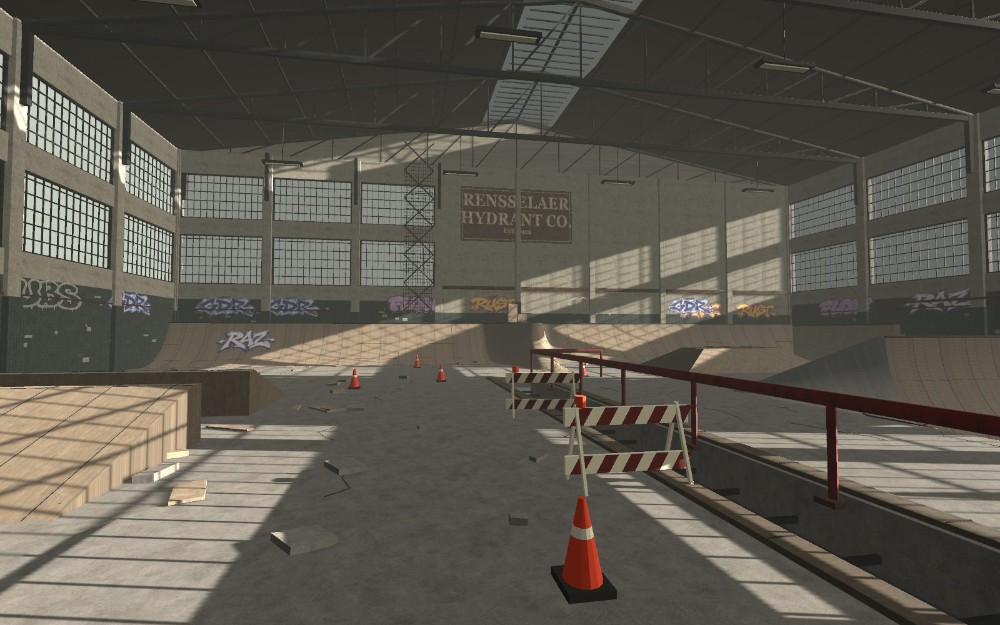
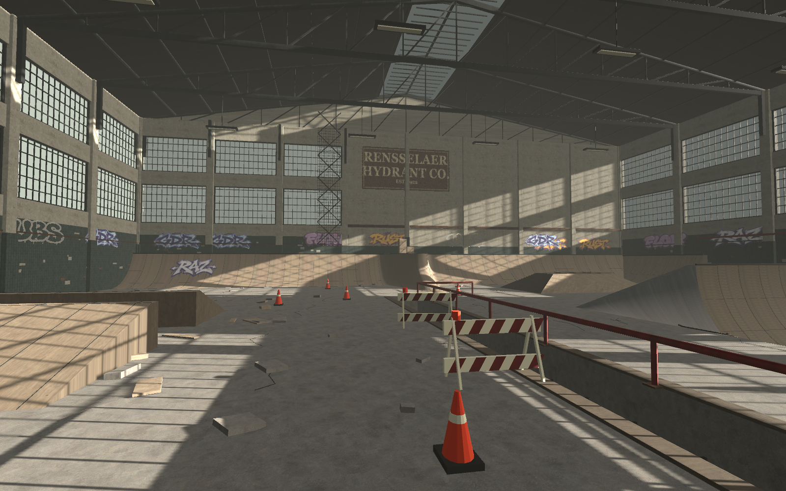
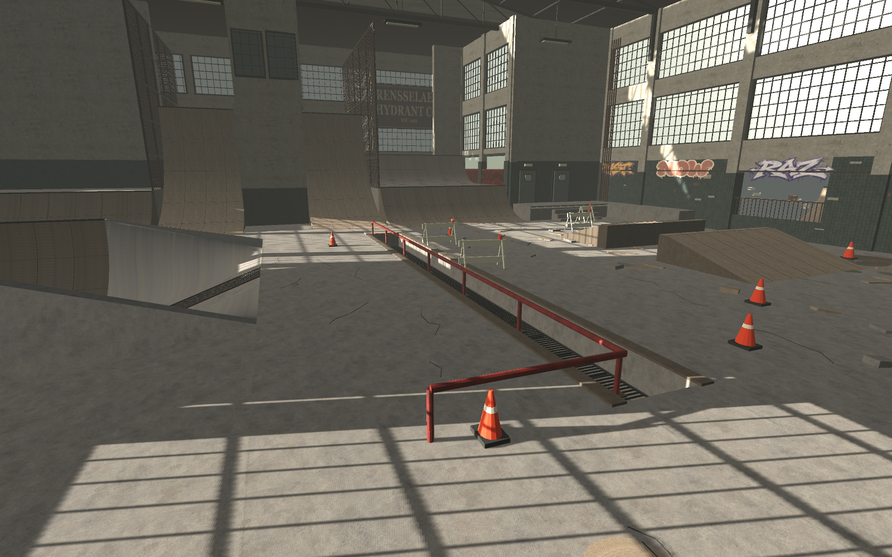
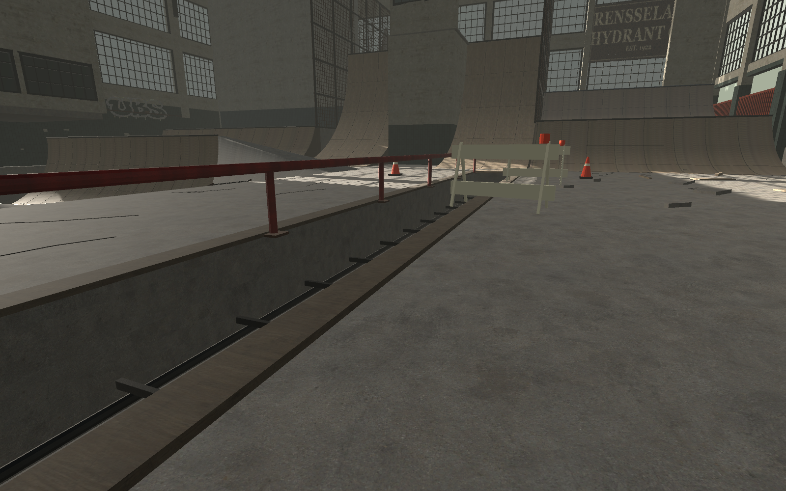
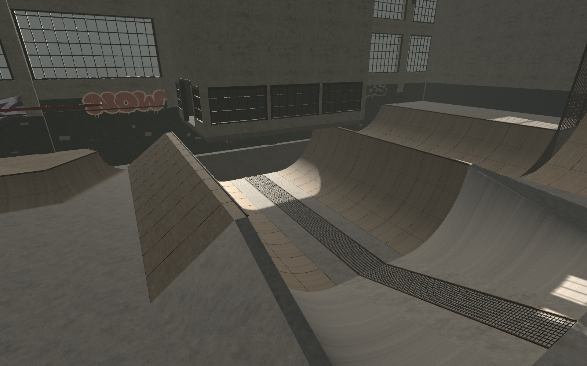
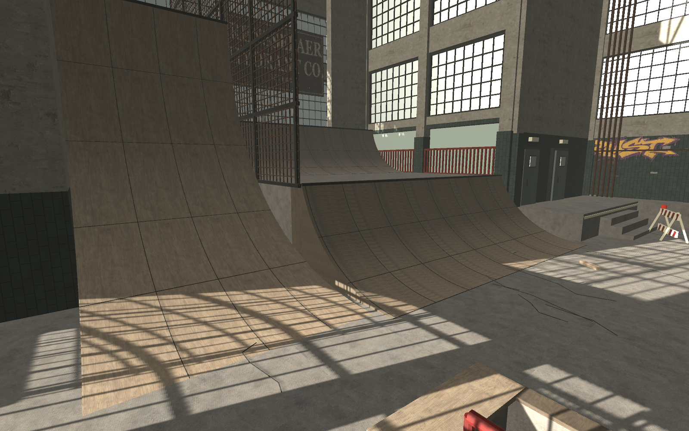

WAREHOUSE / RAMP SIDES AND CENTRAL TRENCH / V13
坡道侧面补齐，中央红杆降低，沟槽加深
以本轮开始时保存的手动布局为准，134 个原有对象的位置、旋转和缩放逐一核对保留。修改局部网格、碰撞和沟槽内部结构。
中央红杆与沟槽：同机位前后



红杆顶部由约 1.29 m 降至约 0.85 m；平面位置和转弯方向保留。格栅下沉约 0.70 m，沟底为 -1.05 m；四周补齐混凝土壁和端面。沟口两边大厅地面保持原高度。

坡道侧板与端面



修正 634 个朝内的木质侧面三角形，补上 10 处坡道端面并同步碰撞。检查覆盖 1876 个垂直木侧面三角形；骑行面和金属包边保持原形。
验证和回退
- 保存后重开场景，134 个原有变换与本轮手动基准一致。
- 196 处沟槽采样确认下凹地板未被平地面覆盖，四壁和沟外地面检查通过。
- 原有 666 处木坡／直坡地板采样和办公室双向通行检查继续通过。
- 91 个有效网格、110579 个三角形，材质、法线和资产依赖检查通过。
场景：Assets/Max/WarehouseRecreation.unity。预制体：WarehouseEnvironment.prefab。本轮修改前备份在 Source~/BeforeTrenchSideRepair~。截图保留；辅助摄像头已按要求清理，当前场景仅保留主摄像头。
已做网格、碰撞和渲染检查，未进行真实滑板／Leap Motion 实滑；本轮没有重新配准整段视频。